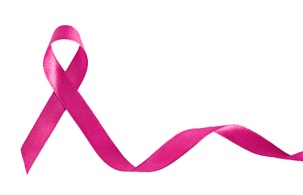

Outubro Rosa é uma campanha internacional que visa aumentar a conscientização sobre o câncer de mama e promover a prevenção e o diagnóstico precoce da doença. Iniciada nos Estados Unidos na década de 1990, a campanha rapidamente se espalhou pelo mundo, envolvendo instituições de saúde, empresas e a sociedade civil. O câncer de mama é o tipo mais comum entre mulheres em várias partes do mundo, mas, quando detectado precocemente, as chances de cura aumentam significativamente. Outubro Rosa nos lembra da importância do autoexame, das mamografias e de um estilo de vida saudável.
Um exemplo marcante é o da atriz brasileira que, após ser diagnosticada com câncer de mama, decidiu compartilhar sua jornada nas redes sociais. Sua coragem e determinação não apenas a ajudaram a enfrentar a doença, mas também inspiraram milhares de outras mulheres a se submeterem a exames preventivos e a falarem sobre a saúde da mama.
Outubro Rosa não é apenas um mês de conscientização; é um chamado à ação. Cada um de nós pode fazer a diferença, seja usando uma fita rosa, participando de eventos ou conversando sobre a importância da prevenção. Juntos, podemos transformar histórias de superação em um movimento mais forte na luta contra o câncer de mama. Neste Outubro Rosa, lembre-se: a informação e a prevenção são nossas melhores armas. Cuide-se, converse sobre o tema e encoraje outras mulheres a fazerem o mesmo. A luta é coletiva, e cada passo conta.
Mês de Conscientização: Outubro é o mês dedicado à conscientização sobre o câncer de mama, com eventos e campanhas de informação.
Educação e Informação: A campanha promove a educação sobre o câncer de mama, incluindo fatores de risco, sinais de alerta e a importância do diagnóstico precoce.
Autoexame e Mamografia: Incentiva a prática do autoexame das mamas e a realização de mamografias, especialmente para mulheres a partir dos 40 anos.
Mobilização Social: Organizações, instituições de saúde, empresas e comunidades se mobilizam para realizar eventos, como caminhadas, palestras e arrecadações.
Histórias de Superação: Compartilhamento de relatos de mulheres que enfrentaram o câncer, visando inspirar e apoiar outras que estão passando pela mesma situação.
Apoio à Pesquisa: Parte dos recursos arrecadados durante o mês é direcionada a pesquisas e tratamentos do câncer de mama.
Solidariedade e Empoderamento: O Outubro Rosa promove a solidariedade entre mulheres e busca empoderá-las a cuidar da própria saúde.
